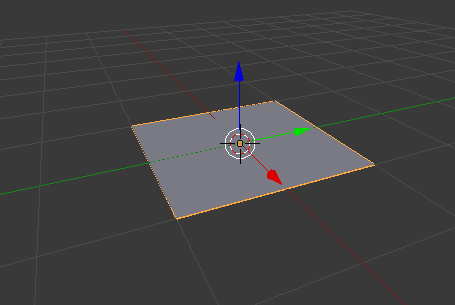

然后导出为OBJ格式（还会附赠一个mtl格式的文件），然后用Notepad++打开:
# www.blender.org
mtllib untitled.mtl
o Plane
v -1.000000 0.000000 1.000000
v 1.000000 0.000000 1.000000
v -1.000000 0.000000 -1.000000
v 1.000000 0.000000 -1.000000
vn 0.0000 1.0000 0.0000
usemtl None
s off
f 1//1 2//1 4//1 3//1
# Blender v2.79 (sub 0) OBJ File: ''
v -1.000000 0.000000 1.000000 v 1.000000 0.000000 1.000000 v -1.000000 0.000000 -1.000000 v 1.000000 0.000000 -1.000000就像Minecraft里的X/Y/Z一样，其实也就是这样的，因为绘制后没有移动，所以Y是0。
@Neoxy 2015-2020